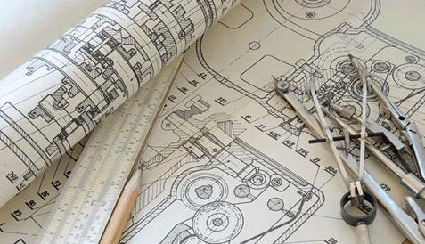

Our Capabilities
Our real capabilities is in our team . Every CNC shop has CNC machines. What's the difference? It's the people who work there that make all the difference, not so much the machines. It's how people use the machines to make the best parts for you, within tolerances, exactly to you specifications, fast and efficient. Just like any handyman has a hammer and pliers, some can't keep up with repeat business while others hunt for random jobs. Whom do you TRUST more? The same happens with CNC machining shops. We are more than just a machine shop. We have in-house team for all your needs beyond CNC Machining, such as design, engineering, research and development and quality control. Our management, programmers and machinists go above and beyond to deliver Quality You Can Trust .
We serve a wide range of industries:
Aviation, Aerospace, Medical equipment, Military, Marine, Automobile, Petroleum, Oil and Gas, Wood processing, Forestry, Agricultural machines and equipment, Architectural equipment and parts, Energy sector, Fluid Control, Electronics, Construction, Machining, Chemical industry, Education, Fishery, Electrical parts, Commercial equipment, Food and Dairy, Power generation, Sports and recreation, Government agencies, and so on.We Machine:
Nozzles, Engine parts, Robot parts, Pulleys, Shafts and Bushings, Electrical equipment, Precision prototypes, Mechanical Actuation Components, Fuel System Components, Power Generator Parts, Electronics Enclosures, Structural Panels, Military Components, Electro-Mechanical Parts, Medical Equipment & Instrumentation, Adaptors, Adjusters, Arbors, Architectural Parts, Assemblies, Axles, Back Plates, Balancers, Brackets, Bushes, Cam Followers, Camera Parts, Cams, Cam-shafts, Caps, Chambers, Connecting Rods, Connectors, Counter-weights, Couplings, Covers, Crimping Tools, Custom Acme Nuts, Custom Bearings, Custom Blades, Custom Clamps, Custom Cutter Bodies, Custom Fasteners, Custom Tools, Custom Washers, Cylinders, Dampers, Discs, Dove Tails, Drums, Electrodes, Feet, Fingers, Fittings, Frames, Grippers, Guides, Handles, Heat sinks, Hinges, Holders, Housings, Hubs, Hydraulic Manifolds, Idlers, Jigs, Joints, Keys, Knobs, Leveling Screws, Lids, Limiters, Locking Devices, Mandrels, Machining Fixtures, Modules, Motor Mountings, Mounts, Needles, Nests, Nozzles, Pads, Pickers, Pillow Blocks, Pins, Pivots, Plugs, Plungers, Pneumatic Manifolds, Precision Struts, Rails, Retainers, Rods, Rollers, Seals, Shafts, Sleeves, Sliders, Spacers, Specialized clamps, Spools, Sprockets, Stand-offs, Stands, Studs, Supports, Terminals, Testing Fixtures, Torque Tubes, Tracks, Valve Parts, Wear Plates, Wedges, Welding Fixtures, Weldments, Wheels and much more.
Haas VF-4
Vertical CNC Machining Centre (Mill)
50" X-Axis Travel
20" Y-Axis Travel
25" Z-Axis Travel
Tool Changer Capacity: 20 Tools
Spindle range: 0 to 7,500 RPM
High Precision 2 Speed gear Box
250ft-lb Torque
Accuracy: +/- 0.0002

Haas SL-30
CNC Turning Centre (Lathe)
Chuck Size: 10"
Standard Bar Capacity: 3.00"
Max Cutting Diameter: 14.0"
Max Cutting Length: 28.00"
Fully Programmable Hydraulic tailstock
Accuracy: +/- 0.0002

Design And Engineering
One-off and Industrial Prototypes
Reverse Engineering
Bach Work
Research and Development
In-House Programmers and Designers
Modern Design and Programming Software